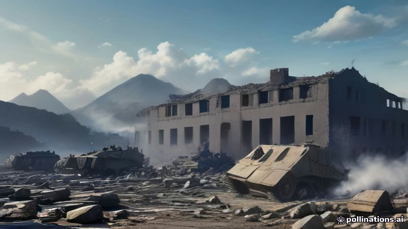

ইসরায়েলি সেনা দক্ষিণ লেবাননে বাড়ি ধ্বংস অব্যাহত রেখেছে
Al Jazeera English · 2026-11-23
AI-generated illustrationআল জাজিরা ইংরেজি অনুযায়ী, ইসরায়েলি সামরিক বাহিনী লেবাননের দক্ষিণে বাড়ি ধ্বংস চালিয়ে যাচ্ছে।
ইসরায়েলি সেনা লেবাননের দক্ষিণে বাড়ি ধ্বংস করছে, আল জাজিরা ইংরেজি জানিয়েছে। এই ধারাবাহিক ধ্বংসে আবাসিক কাঠামো ভেঙে ফেলা হচ্ছে, যা অঞ্চলে সামরিক কার্যক্রমের ধারাবাহিকতা নির্দেশ করে। প্রতিবেদনে কতগুলো বাড়ি ধ্বংস হয়েছে বা এর পেছনের কারণ সম্পর্কে অতিরিক্ত তথ্য দেয়া হয়নি। অব্যাহত ধ্বংস স্থানীয় নাগরিকদের উপর প্রভাব এবং সীমান্ত অঞ্চলের নিরাপত্তা পরিস্থিতি সম্পর্কে উদ্বেগ বাড়িয়ে তুলেছে।
Read the original reporting at the links above.
English version
Israeli Forces Persist with House Demolitions in Southern Lebanon
Israeli forces are carrying out house demolitions in the southern region of Lebanon, Al Jazeera English reported. The ongoing demolitions involve the destruction of residential structures, continuing a pattern of military activity in the area. The report did not provide further details on the number of homes affected or the reasons behind the actions. The continued demolitions have raised concerns among observers about the impact on local civilians and the broader security situation in the border region.